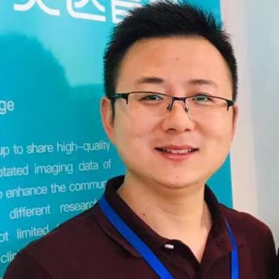

Jiong Zhang
Professor Email: jiong.zhang(AT)ieee(DOT)org |
 |
I am currently a professor at Laboratory of Laboratory of Advanced Theranostic Materials and Technology, NIMTE, Chinese Academy of Sciences (CAS). I have obtained my PhD degree from the IMAG/e group at Eindoven University of Technology (TU/e), Eindhoven, the Netherlands in 2017. Afterwards, I worked as a postdoctoral research associate at TU/e. From 2018 I moved to the US and continued my postdoctoral research at Laboratory of NeuroImaging (LONI) at Keck School of Medicine, University of Southern California (USC), Los Angeles, USA. My research interests lies in developing advanced techniques, including artificial intelligence, geometric analysis, and shape analysis, for image enhancement, segmentation, and biomarker extraction. My work is particularly focused on advancing the understanding and analysis of vascular and small vessel diseases in brain, eyes, and other organs. In the last few years, I have published over 80 papers in leading medical imaging journals and conferences, including IEEE TMI, IEEE TIP, MedIA, IEEE TBME, PR, MICCAI and ISBI. I am currently serving as the Associate Editors of Pattern Recognition and Medical Physics, and have been actively leading the Guest Editorship of several special issues in leading journals including IEEE Journal of Biomed. and Health Inform (Foundation Models in Medical Imaging), and academic services such as the Area Chair or PC member of several leading conferences including MICCAI, AAAI, CVPR, ICASSP, etc..
My research focuses on:
|
|
|
Recent News:
Professional Activities:
- Memberships:
- IEEE Member.
- Assocaite Editors:
- Pattern Recognition
- Medical Physics
- BMJ Open Ophthalmology
- IEEE Journal of Biomedical and Health Informatics, Special Issue on “Foundation Models in Medical Imaging”, 2023.
- Frontiers in Medicine, Special Issue on “Predictive and Diagnostic Approaches for Systemic Disorders Using Ocular Assessment”, 2020.
- Sensing and Imaging, Special Issue on “Deep Learning for Medical Image Reconstruction and Analysis”, 2020.
- Area Chair/PC:
- MICCAI (2025), ICASSP (2025), MICCAI (2024), MCVR (2023), MICCAI-OMIA (2017-2023), ICCCV (2022), AAAI (2022), CVPR-CVPM (2019-2023), ICCV-CVPM (2019), VSIP (2021)
Highlighted Publications:
More publications in: [ G o o g l e Scholar ]• J. Zhang; Q. Xie; L. Mou; D. Zhang; D. Chen; C. Shan, Y. Zhao, R. Su, M. Guo.
[LINK] DSCA: A Digital Subtraction Angiography Sequence Dataset and Spatio-Temporal Model for Cerebral Artery Segmentation.
IEEE Transactions on Medical Imaging, 2025, DOI: 10.1109/TMI.2025.3540886.,
• C. Lu, Z. Guo, D. Zhang, L. Mou, J. Yuan, S. Ma, D. Chen, Y. Zhao, K. Xia*, J. Zhang*. [LINK]RSAPower: Random Style Augmentation Driven Structure Perception Network for Generalized Retinal OCT Fluid Segmentation. IEEE Transactions on Medical Imaging, 2025, DOI: 10.1109/TMI.2025.3531496.
• H. Mao, Y. Ma, D. Zhang, Y. Meng, S. Ma, Y. Qiao, H. Fu, C. Shan, D. Chen, Y. Zhao, J. Zhang*. [LINK]MR2-Net: Retinal OCTA Image Stitching via Multi-Scale Representation Learning and Dynamic Location Guidance. IEEE Journal of Biomedical and Health Informatics, 29(1), 482-494, 2025, doi: 10.1109/JBHI.2024.3467256.
• J. Zhang, C. Lu, R. Song, Y. Zheng, H. Hao, Y. Meng, Y. Zhao. [LINK]Self-Guided Adversarial Network for Domain Adaptive Retinal Layer Segmentation. IEEE Transactions on Instrumentation and Measurement, 2024, 73:3527110.
• X. Xu, P. Yang, H. Wang, Z. Xiao, G. Xing, X. Zhang, W. Wang, F. Xu, J. Zhang*, J. Lei*. [LINK]AV-casNet: Fully Automatic Arteriole-Venule Segmentation and Differentiation in OCT Angiography. IEEE Transactions on Medical Imaging, 42(2), 481-492, 2023, doi: 10.1109/TMI.2022.3214291.
• G. Xing, L. Chen, H. Wang, J. Zhang, D. Sun, F. Xu, J. Lei, and X. Xu. [LINK]Multi-scale pathological fluid segmentation in OCT with a novel curvature loss in convolutional neural network. IEEE Transactions on Medical Imaging2022, 41(6):1547-1559.
• H. Wang, Y. Zhou, J. Zhang, J. Lei, D. Sun, F. Xu, and X. Xu. " [LINK]Anomaly Segmentation in Retinal Images with Poisson-Blending Data Augmentation. Medical Image Analysis 81 (2022): 102534.
• H. Hao, C. Xu, Q. Yan, D. Zhang, J. Zhang*, Y. Liu*, Y. Zhao, Sparse-based Domain Adaptation Network for OCT-A Image Super-Resolution Reconstruction, IEEE Journal of Biomedical and Health Informatics, 2022, 26(9): 4402-4413.
• M. Awais, X. Long, B. Yin, S. F. Abbasi, S. Akbarzadeh, C. Lu, X. Wang, L. Wang, J. Zhang, J. Dudink, W. Chen, A hybrid DCNN-SVM model for classifying neonatal sleep and wake states based on facial expressions in video, IEEE Journal of Biomedical and Health Informatics 25 (5), 1441-1449, 2021
• X. Ge, D. Zhang, Y. Qiao, J. Zhang, J. Xu, Y. Zheng, Association of Tau pathology with clinical symptoms in the subfields of hippocampal formation, Frontiers in Aging Neuroscience,13, 2021
• A.H. Kashani, S. Asanad, J. Chen, M. Singer, J. Zhang, M. Sharifi, M. Khansari, F. Abdolahi, Y. Shi, A. Biffi, H. Chui, J. M Ringman, Past, present and future role of retinal imaging in neurodegenerative disease, Progress in Retinal and Eye Research, 100938, 2021
• J. Zhang, Y. Shi. ”Personalized Matching and Analysis of Cortical Folding Patterns via Patch-Based Intrinsic Brain Mapping”. In MICCAI 2021, Lecture Notes in Computer Science, In Press, 2021
• Y. Zhao, J. Zhang*, H. Qi, T. Zheng, J. Liu. ” Automated Tortuosity Analysis of Nerve Fibers in Corneal Confocal Microscopy”. IEEE Transactions on Medical Imaging. (2020) vol. 39(9), pp. 2725-2737.
• J. Zhang, Y. Qiao, M. Khansari, J.K. Gahm, M. Sharifi, A.H. Kashani and Y. Shi. ”3D Shape Modeling and Analysis of Retinal Microvasculature in OCT-Angiography Images”. IEEE Transactions on Medical Imaging. vol. 39 (5), pp. 1335–1346, 2020
• M.S. Sarabi, M. Khansari, J. Zhang, S.K. Lenhoff, J.K. Gahm, Y. Qiao, A. H. Kashani, and Y. Shi. "3D Retinal Vessel Density Mapping With OCT-Angiography." IEEE Journal of Biomedical and Health Informatics. 24, no. 12 (2020): 3466-3479.
• M. Khansari, J. Zhang, Y. Qiao, J.K. Gahm, M. Sharifi, A.H. Kashani and Y. Shi. “Automated Deformation-based Analysis of 3D Optical Coherence Tomography in Diabetic Retinopathy”. IEEE Transactions on Medical Imaging. vol. 39 (1), pp. 236–245, 2019
• J. Zhang, A.H. Kashani and Y. Shi. ”3D Surface-Based Geometric and Topological Quan- tification of Retinal Microvasculature in OCT-Angiography via Reeb Analysis”. In MICCAI 2019, , vol. 11764, pp. 57-65, Springer International Publishing, 2019
• D. Chen, J. Zhang*and L. Cohen. “Minimal Paths for Tubular Structure Segmentation with Coherence Penalty and Adaptive Anisotropy”. IEEE Transactions on Image Processing. vol. 28 (3), pp. 1271–1284, 2019
• Z. Li, F. Huang, J. Zhang et al. ”Multi-modal and multi-vendor retina image registration”. Biomedical Optics Express. vol. 9 (2), pp. 410–422, 2018
• J. Zhang, E. Bekkers, D. Chen, T. Berendschot, J. Schouten, J. Pluim, Y. Shi, B. Dashtbozorg and B. ter Haar Romeny. ”Reconnection of interrupted curvilinear structures via cortically inspired completion for ophthalmologic images”. IEEE Transactions on Biomedical Engineering. vol. 65 (5), pp. 1151–1165, 2018
• B. Dashtbozorg, J. Zhang*, F. Huang and B. ter Haar Romeny. ”Retinal microaneurysms detection using local convergence index features”. IEEE Transactions on Image Processing. vol. 27 (7), pp. 3300–3315, 2018
• J. Zhang, Y. Chen, E. Bekkers, M. Wang, B. Dashtbozorg and B. ter Haar Romeny. ”Retinal vessel delineation using a brain-inspired wavelet transform and random forest”. Pattern Recognition. vol. 69 (2017), pp. 107–123, 2017
• S. Abbasi, J. Zhang, R. Duits and B. ter Haar Romeny. ”Retrieving challenging vessel connections in retinal images by line co-occurrence statistics”. Biological Cybernetics, vol. 111 (3), pp. 237–247, 2017
• J. Zhang, B. Dashtbozorg, E. Bekkers, J. Pluim, R. Duits and B. ter Haar Romeny. ”Robust retinal vessel segmentation via locally adaptive derivative frames in orientation scores”. IEEE Transactions on Medical Imaging. vol. 35 (12), pp. 2631–2644, 2016
• B. ter Haar Romeny, E. Bekkers, J. Zhang et al. ”Brain-Inspired Algorithms for Retinal Image Analysis”. Machine Vision and Applications, pp. 1-19, 2016. DOI: 10.1007/s00138-016-0771-9
• F. Huang, B. Dashtbozorg, J. Zhang, E. Bekkers, S. Abbasi, T.J.M. Berendschot and B. ter Haar Romeny. ” Reliability of using retinal vascular fractal dimension as a biomarker in the diabetic retinopathy detection”. Journal of Ophthalmology, 2016:6259047, pp.1-13, 2016
• J. Zhang, R. Duits, G. Sanguinetti, and B. ter Haar Romeny. ”Numerical approaches for linear left-invariant diffusions on SE(2), their comparison to exact solutions, and their applications in retinal imaging”. Numerical Mathematics: Theory, Methods and Applications (NM-TMA), vol. 9 (1), pp. 1-50, 2015